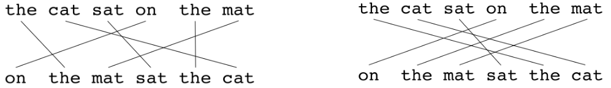

Evaluation Metrics
Machine Translation models translate a given sentence by searching for the sentence that best suits a given criterion. However, all approaches have to be evaluated to quantify the quality and accuracy of the produced translations. Naturally, the best method would be to have human experts rate each produced translation (Candidate) in order to evaluate the whole MT system based on the reference translations.
This is a quite costly process and is not viable for development of MT systems. For this reason a number of metrics exist that automate the process and use different scoring methods to automatically evaluate the produced translation based on a reference sentence. The evaluation metrics objective is to be as close as possible to the human translation and currently the most common techniques for calculating the correlation between human and automatic evaluations are the Spearman’s rank correlation coefficient and the Pearson product-moment correlation coefficient. These evaluation metrics can be divided into three categories:
-
Count-based Metrics.
-
Edit-distance-based Metrics.
-
Pre-trained Metrics.
Count-based Metrics
Count-based metrics compute the n-grams of both reference and candidate and then compare them with each other using a scoring function.
BLEU
BLEU, stands for “Bilingual Evaluation Understudy”, is an evaluation metric for machine translation proposed by Aachen University in 2002 and published in this paper: “Discriminative Training and Maximum Entropy Models for Statistical Machine Translation”. BELU is considered the most commonly used evaluation metric for machine translation so far. In the following part, we will get a sense of how it works:
Taking the former example where the French sentence has been translated by two different linguists. Let’s say that our Machine Translation Model has produced a bad translation for the French sentence; which is:
Let’s see how we can calculate the BLEU score for this translation. First, we will split the sentence into words and see if each word appears in the provided references like so. But, BLEU score doesn’t care about only the words. It’s cares about word-pairs as well. So, let’s see the bigram word-pairs of the previous translation too:
So, the unigram score will be $\frac{2 + 1 + 1 + 1}{3 + 2 + 1 + 1} = \frac{5}{7}$ and the bigram score will be $\frac{1 + 0 + 1 + 1 + 1}{2 + 1 + 1 + 1 + 1} = \frac{4}{6} = \frac{2}{3}$. In other words, the BLEU score of a n-gram model will be:
\[P_{n} = \left( \sum_{ngram \in \hat{y}}^{}{\text{Coun}t_{\text{maxref}}\left( \text{ngram} \right)} \right) \ast \left( \sum_{ngram \in \hat{y}}^{}{\text{Coun}t_{\text{output}}\left( \text{ngram} \right)} \right)^{- 1}\]It’s common to get the values of $P_{1}$ till $P_{4}$ then combine these scores in the following formula:
\[\text{BLEU} = \text{BP} \ast \exp\left( \frac{1}{4} \ast \sum_{n = 1}^{4}P_{n} \right)\]$\text{BP}$ factor stands for “Brevity Penalty”. It turns out that if we output very short translations, it's easier to get high BLEU score because most of the words will appear in the references. But we don't want translations that are very short. So, the $\text{BP}$, or the brevity penalty, is an adjustment factor that penalizes translation systems that output translations that are too short. So, the formula for the brevity penalty is the following. It's equal to $1$ if our machine translation system actually outputs things that are longer than the human generated reference outputs. And otherwise is some formula like that that overall penalizes shorter translations:
\[\text{BP} = \left\{ \begin{matrix} \ \ \ \ \ \ \ \ \ \ 1\ \ \ \ \ \ \ \ \ \ \ \ \ \ \ \ \ \ \ \ \ L_{\text{out}} > L_{\text{ref}} \\ \exp\left( 1 - \frac{L_{\text{ou}t}}{L_{\text{ref}}} \right)\ \ \ \ \ \ \ \ \ \ \ \text{otherwise} \\ \end{matrix} \right.\]Such that $L_{\text{out}}$ is the length of the generated sentence by our Machine Translation Model, $L_{\text{ref}}$ is the length of the reference sentence.
METEOR
Meteor, stands for “Metric for Evaluation of Translation with Explicit Ordering”, is an evaluation metric for machine translation proposed by Carnegie Mellon University in 2005 and published in this paper: “METEOR: An Automatic Metric for MT Evaluation with Improved Correlation with Human Judgments”.
This metric was designed to fix some of the problems found in the BLEU metric, and also produce good correlation with human judgement. According to the paper, METEOR shows correlation of up to 0.964 with human judgement at the corpus level, compared to BLEU's achievement of 0.817 on the same data set.
To see how this metric works, let’s take an example and evaluate the following hypothesis translation using the reference one:
We can calculate the METEOR metric using the following steps:
- The first step is to create an alignment between two sentences (hypothesis, reference) resulting something like this:
- Then, calculate the precision $P$ and the recall $R$:
- Then, Precision and recall are combined using the harmonic mean with recall weighted 9 times more than precision:
- Calculate the hypothesis chunks; a chunk is defined as a set of unigrams that are adjacent in the hypothesis and in the reference. So, in this example, we have 2 chunks that consists of 6 unigrams:
- Now, we can calculate the penalty; The penalty has the effect of reducing the F~mean~ by up to 50% if there are no bigram or longer matches:
- Finally, the METEOR value is:
Notes:
- If there are two alignments with the same number of mappings, the alignment is chosen with the fewest crosses/intersections. From the two alignments shown below, the alignment on the left would be selected at this point:

The highest value for METEOR metric is 1 unlike BLEU.
To calculate a score over a whole corpus, the aggregate values for P, R and penalty are taken and then combined using the same formula.
METEOR also works for comparing a candidate translation against more than one reference translations. In this case the algorithm compares the candidate against each of the references and selects the highest score.
BEER
BEER, stands for “BEtter Evaluation as Ranking”, is an evaluation metric for machine translation proposed by the university of Amesterday in 2014 and published in this paper: “BEER: BEtter Evaluation as Ranking” and the official GitHub repository can be found here: beer.
TO BE CONTINUED…
ChrF
ChrF, stands for “character F-score” is another count-based metric for evaluating machine translation models. ChrF was proposed by Maja Popovic´at the Humboldt University of Berlin in 2015 and published in this paper: “CHRF: character n-gram F-score for automatic MT evaluation”.
Note:
You can usenltk.chrf_score()function for this metric.
This metric depends on the character-level n-gram since it correlates very well with human judgments. The general formula for the CHRF score is:
\[\text{chr}F_{\beta} = \left( 1 + \beta^{2} \right).\frac{chrP + chrR}{\beta^{2}.chrP + chrR}\]Where $\text{chrP}$ and $\text{chrR}$ are the n-gram precision and recall respectively averaged over all character n-grams. And and $\beta$ is a parameter which assigns $\beta$ times more importance to recall than to precision. If $\beta = 1$, they have the same importance.
To understand this metric better, let’s take an example and evaluate the following hypothesis translation using the reference one:
We can calculate the chrF metric using the following steps:
- Calculate the unigram character for both reference and hypothesis:
| a | c | e | h | i | k | l | o | s | t | v | y | |
|---|---|---|---|---|---|---|---|---|---|---|---|---|
| Reference | 1 | 1 | 2 | 1 | 1 | 0 | 1 | 1 | 0 | 2 | 1 | 0 |
| Hypothesis | 0 | 0 | 2 | 1 | 3 | 2 | 1 | 0 | 0 | 3 | 0 | 1 |
-
Calculate the following metrics:
- $tp$ (True Positive): count of characters found in both hypothesis and reference. So, in this example, we have (e,2), (h,1), (i,1), (l,1), (t,2):
- $\text{tpfp}$ (True Positive + False Positive): count of characters found in hypothesis.
- $\text{tpfn}$ (True Positive + False Negative): count of characters found in reference.
- Then, we can calculate the precision $\text{chr}P$ and the recall $\text{chrR}$:
- Now, we can calculate the character f-score:
- All of that for unigram character model. In the paper, they did that when n=1 till n=6. So, we will do the same when n=2,3,4,5,6 and then average the f-score.
Edit-Distance-Based Metrics
Edit distance based metrics utilize the edit distance to express the difference between the candidate and the reference. Edit distance is a way to quantify how two words are far apart. More formally, the minimum edit distance between two strings is defined as the minimum number of editing operations (operations like insertion, deletion, substitution, and shifts of adjacent letters) needed to transform one string into another. The most common edit distance is the Levenshtein distance.
MMS
MMS, stands for “Maximum Matching String”, is an evaluation metric for machine translation proposed by New York University in 2003 and published in this paper: “Evaluation of Machine Translation and its Evaluation”.
TO BE CONTINUED…
TER
TER, stands for “Translation Edit Rate”, is an evaluation metric for machine translation proposed by the university of Maryland in 2006 and published in this paper: “A Study of Translation Edit Rate with Targeted Human Annotation” and an unofficial repository implementing TER can be found in the sacreBLEU python package.
TER measures the amount of editing that a human would have to perform to change a candidate translation so it exactly matches a reference translation normalized by the average length of the references.
\[TER = \frac{\#\ of\ edits}{average\ \#\ of\ reference\ words}\]Let’s take an example to see how TER works; consider the following translation:
Here, the hypothesis (HYP) is fluent and means the same thing (except for missing “American”) as the reference (REF). However, TER does not consider this an exact match as:
-
The phrase “this week” is “shifted” (this counts as one shift). Shifts have a cost of one no matter how far this phrase moves.
-
The phrase “Saudi Arabia” in the reference appears as “the Saudis” in the hypothesis (this counts as two separate substitutions).
-
The word “American” appears only in the reference (this counts as one insertion).
Then, the TER score is:
Important Notes:
Since we are concerned with the minimum number of edits needed to modify the hypothesis, we only measure the number of edits to the closest reference.
TER assumes that all edits (insertion, deletion, ...etc.) have the same cost.
Punctuations are treated as normal words.
Mis-capitalization is counted as an edit.
In the paper, T(1) denoted that TER was used on just one reference sentence while T(4) was used on four different reference sentences.
CharacTER
CharacTER is a Translation Edit Rate (TER) on Character evaluation metric for machine translation proposed by Aachen University in 2016 and published in this paper: “CharacTER: Translation Edit Rate on Character Level” and the official code for this metric can be found on this GitHub repository: CharacTER.
CharacTer is defined as the minimum number of character edits required to adjust a hypothesis until it completely matches the reference, normalized by the length of the hypothesis sentence:
\[CharacTER = \frac{shift\ cost\ + \ edit\ distance}{\#\ characters\ in\ the\ hypothesis\ sentence}\]CharacTer calculates shift edit on word level; two words are considered to be matched if they are exactly the same, or if the edit distance between them is below a threshold value.
EED
EED, stands for “Extended Edit Distance”, is an evaluation metric for machine translation proposed by Aachen University in 2019 and published in this paper: “EED: Extended Edit Distance Measure for Machine Translation”. The official code for this metric can be found in the following GitHub repository: ExtendedEditDistance.
This paper proposes an extension of the Levenshtein edit distance, which achieves better human correlation whilst remaining fast, flexible and easy to understand. This extension is can be described as a “jump”, a jumps provides the opportunity to continue the edit distance computation from a different point. In the following figure, a jump is represented as a dashed line:

EED utilizes the idea of jumps as an extension of the edit distance. EED operates at character level and is defined as follows:
\[EED = min\left( \frac{\left( e + \alpha \text{.j} \right) + \rho \text{.v}}{\left| r \right| + \rho \text{.v}},\ 1 \right),\ \ \ \text{EED} \in \left\lbrack 0,\ 1 \right\rbrack\]Where:
-
$e$ is the sum of the edit operation with uniform cost of 1 for insertions and substitutions and 0.2 for deletions.
-
$j$ denotes the number of jumps performed with the corresponding control parameter $\alpha = 2.0$.
-
$v$ defines the number of characters that have been visited multiple times or not at all and scales over $\rho = 0.3$.
-
$\left r \right $ is the length of the reference sentence.
Pre-trained Metrics
These kind of metrics use pre-trained neural models to evaluate the quality of MT output texts given the source sentence, the human reference, or both. One thing good about these metrics is that they are not strictly dependent on the human translation, so they can better evaluate synonyms or paraphrases.
On the other hand, their performance is influenced by the data on which they have been trained. Also, the pre-trained models introduce a black-box problem where it is difficult to diagnose potential unexpected behavior of the metric, such as various biases learned from training data.
YiSi
Check the paper: YiSi - A unified semantic MT quality evaluation and estimation metric for languages with different levels of available resources. The official code for this paper can be found on this GitHub repository: yisi.
TO BE CONTINUED…
BERTScore
BERTScore is an automatic evaluation metric for text generation proposed by Cornell University in 2020 and published in their paper: Bertscore: Evaluating Text Generation With Bert. The official repository for this paper can be found here bert_score.
BERTScore computes a similarity score for each token in the candidate sentence with each token in the reference sentence. However, instead of exact matches, we compute token similarity using contextual embeddings. Which makes it the perfect candidate for evaluating machine translation models. The scoring algorithm is relatively straightforward as shown in the following figure:
Given a reference sentence and a candidate sentence $x$ and a candidate sentence $\widehat{x}$, the scoring algorithm goes like so:
-
Tokenize the sentences using the tokenizer provided by each model; so the reference sentence becomes $x = \langle x_{1},\ …x_{k} \rangle$ and the candidate sentence becomes $\widehat{x} = \langle \widehat{x}_1,\text{ …}\widehat{x}_l \rangle$
-
Given these tokenized sentences, BERT generates representation the same size as the tokenized sentences; the translation hypothesis embedding $\mathbf{x}=\langle \mathbf{x}_{\mathbf{1}}\mathbf{,\ …}\mathbf{x}_{\mathbf{k}} \rangle$ and the reference sentence embedding $\widehat{\mathbf{x}}=\langle \widehat{\mathbf{x}}_{\mathbf{1}},\text{ …}\widehat{\mathbf{x}}_{\mathbf{l}} \rangle$.
-
Compute a matrix of pair-wise cosine similarities of all words from the hypothesis and from the reference sentence. The cosine similarity of a reference token $x_{i}$ and a candidate token ${\widehat{x}}_{j}$ is:
- Use greedy approach, we get the maximum similarity where each token in the reference sentence is matched to the most similar token in the candidate sentence to use them to compute the precision & recall.
- We combine precision and recall to compute the F1 measure: the harmonic average of precision and recall.
- Since previous work demonstrated that rare words can be more indicative for sentence similarity than common words, we incorporate inverse document frequency (idf) weighting. Given $M$ reference sentences $\left[ x^{\left( i \right)} \right]_{i = 1}^{M}$, the idf score of a word-piece token $w$ is:
Where $\mathbb{I}\left\lbrack . \right\rbrack$ is an indicator function.
- Now, the precision & recall becomes:
- Finally, BERTScore have the same numerical range of cosine similarity $\left\lbrack - 1,1 \right\rbrack$. However, in practice scores are in a more limited range $\left\lbrack 0,1 \right\rbrack$. So, we rescale BERTScore with respect to its empirical lower bound b as a baseline like so:
- We compute b using Common Crawl monolingual datasets. For each language and contextual embedding model, we create 1M candidate-reference pairs by grouping two random sentences. Because of the random pairing and the corpus diversity, each pair has very low lexical and semantic overlapping. We compute $b$ by averaging BERTScore computed on these sentence pairs.
BLEURT
BLEURT is an automatic evaluation metric for text generation proposed by Google Research in 2020 and published in their paper: BLEURT: Learning Robust Metrics for Text Generation. The official code for this paper can be found on Google Research’s official GitHub repository: bleur.
TO BE CONTINUED…
COMET
BLEURT is an automatic evaluation metric for machine translation proposed by Unbabel AI in 2020 and published in their paper: COMET: A Neural Framework for MT Evaluation. The official repository for this paper can be found on this GitHub repository: COMET.
TO BE CONTINUED…
Prism
Prism is an automatic evaluation metric for machine translation proposed by John Hopkins Unversity in 2020 and published in their paper: Automatic Machine Translation Evaluation in Many Languages via Zero-Shot Paraphrasing. The official code for this paper can be found on this GitHub repository: prism.
TO BE CONTINUED…